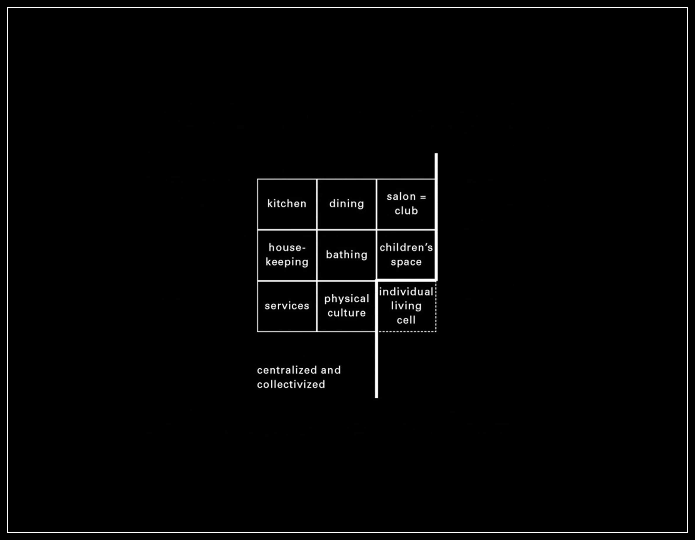
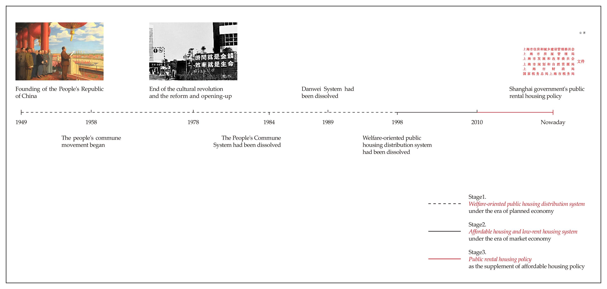
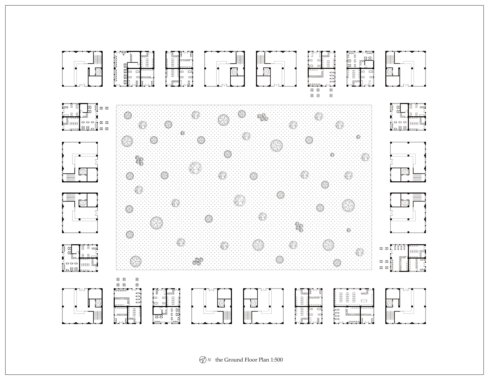
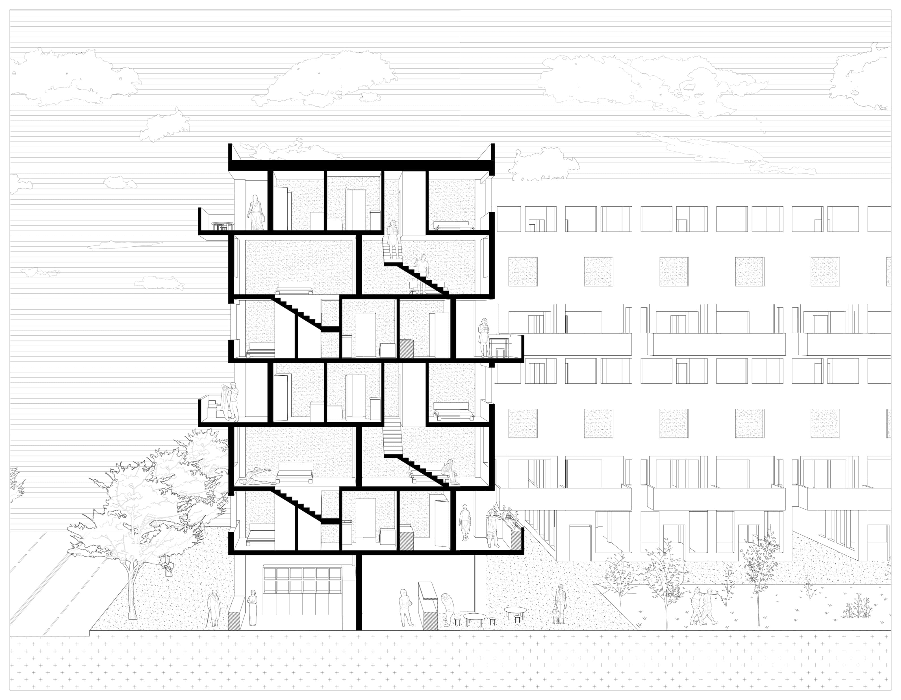

The Middle Typology: Public Housing for the New Generation of China
This project records postgraduate architecture study of Hanwen XU in AA Projective Cities - Studio 1: Parts, Units and Groups. You can download the whole project here:
You could find more about AA Projective Cities at:
http://projectivecities.aaschool.ac.uk/
INTRODUCTION
From the planned economy to the market economy, Chinese society has experienced drastic changes in the past 70 years. Among those most affected are young people born between 1980 and 2000, known as Generation Z. This group usually do not have experience of communal life in the planned economy ages. They usually have opportunities to gain high education in the university and flocked to the large cities for better opportunities after the collapse of the danwei system 1. However, the first challenge they face is the high housing prices and poor living conditions in large cities such as Shanghai and Beijing. There is a strong disconnect between their higher income levels and poor living conditions. This research mainly focuses on the Chinese government-led public housing rental policy started in 2010, which attempts to solve the living problem of this group of people according to the special social housing project. According to the analysis of four public housing under this context, a conceptual design exercise will be implemented in Barcelona, Spain.
 FIG.1. The Minimum Dwelling of Teige Karel
 FIG.2. The Study of Housing Policy in China since 1949, Chapter 1
 FIG.3. Case Studies Analysis-Living Unit, Chapter 2
FIG.3. Case Studies Analysis-Living Unit, Chapter 2
 FIG.4. Case Studies Redrawing-Plan, Chapter 2
FIG.4. Case Studies Redrawing-Plan, Chapter 2
 FIG.5. Case Studies' Comparative Analysis, Chapter 3
FIG.5. Case Studies' Comparative Analysis, Chapter 3
 FIG.6. Unit, Floor, Community, Society and Functional Space, Chapter 3
FIG.6. Unit, Floor, Community, Society and Functional Space, Chapter 3
 FIG.7. Forms: Study and Design, Design Exercise
FIG.7. Forms: Study and Design, Design Exercise
 FIG.8. The Ground Floor Plan, Design Exercise
 FIG.9. Living Units, Design Exercise
FIG.9. Living Units, Design Exercise
 FIG.10. The Axonometric, Design Exercise
FIG.10. The Axonometric, Design Exercise
 FIG.11. Section 1-1`, Design Exercise
ATOMIZED INDIVIDUAL AND THE ARCHITECTURE AS MACHINE
Unlike their parents, Chinese youth who did not experience the collective living of the planned economy show individualistic tendencies after leaving university in the 2000s. At the stage of transformation from students in university to humans in society, they are separated from the original collective. The youths are in the process of joining a new collective (this collective may be their company, family, and friends, rather than the collective of the temporary social housing), making them more similar to atomized individuals. Therefore, the public activities in such social housing are restrained and moderate in design.
On the other hand, this typology of social housing was conceived as a temporary dwelling from the beginning of design. In the case of Longnan Garden, the designer even considered the possibility of converting social housing into other types of buildings after 20 years.
Thus, social housing is considered by designers, managers and residents as a transient living machine designed to help the residents through a crisis state in their life (i.e. the transition from student to social person). In Michelle Foucault's Of Other Spaces, social housing can be regarded as a crisis heterotopia. This machine (the housing project) aims to build bonds between these youths and society rather than collective bonds within the transient collective

BIBLIOGRAPHY
Evans, Robin. Translations from drawing to building and other essays. Architectural Assiociation,1978.
Foucault, Michelle. Of Other Space. 1986.
Hassenpflug, Dieter. the Urban Code of China, trans. Mark Kammerbauer. Basel: Birkhäuser GmbH, 2010.
Jacoby, Sam. Drawing Architecture and the Urban. London, John Wiley ＆ Sons Ltd, 2016.
Perry, Clarence. The Neighborhood Unit, a Scheme for Arrangement for the Family-Life Community. 1929.
Teige, Karel. The Minimum Dwelling, trans. Eric Dluhosch. The MIT Press, 2002.
Wu, Fulong. Packaging a New Way of Urban Life: Gated Communities and Chinese New Urbanism. Cardiff: Cardiff University Paper, 2006.
Yang, Chen. From Model Community to Monumental Site: a Workers’ Village through History. Shanghai: Tongji University Press, 2019.
Zhang, Zao. Stories of Longnan Social Housing - a Public Rental Housing Project and Its Designer’s Manifesto and Daily Life, Architectural Journal ,5(2017). China Academic Journal Electronic Publishing House, 2017.